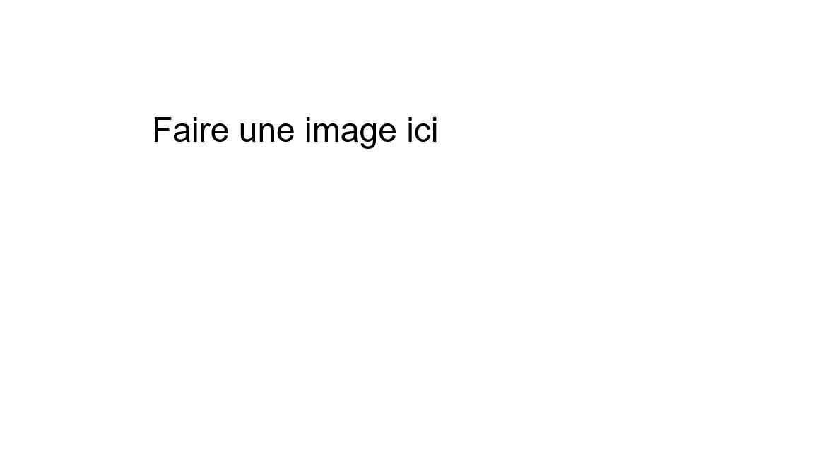

Description
Le menu principal se présente sous la forme d'un lieu cryptique ou vous controlez une tomate sur pattes qui se balade, avant de rentrer par mégarde dans une porte qui va lui valoir une attaque par des vers la porte dans laquelle elle rentre permet de choisir les questions posées par les vers, les notions sont d'abord divisées en niveau d'études puis en notion individuelle. Une fois le niveau d'études choisi, la notion se séléctionne par un clic gauche de la souris.

Le menu où se déplace la tomate
Menu de choix d'une notion
Utilisation
Le personnage se déplace comme un personnage de jeu vidéo se déplace habituellement, les fleches ou zqsd, espace pour sauter et entrée pour rentrer dans une porte, vous pouvez consulter la partie Contrôles pour en savoir plus. Le menu se présente sous forme d'un escalier mais pas de panique, la tomate saute assez haut pour revenir à la notion que vous auriez raté en chutant. Nous avons créé ce menu uniquement pour offrir une expérience ludique et non pour rajouter de la difficulté au travail des mathématiques.
Description de l'interface
Dans l'image ci contre, vous pouvez apercevoir une capture d'écran provenant d'une partie type.
Les éléments de cette image importants au jeu sont : la tomate au centre et sa barre de vie, les vers qui arrivent vers la tomate, mais surtout les questions au dessus de leur tête.
Il y a également le score en haut à droite, qui vous permet d'évaluer vos performances ainsi qu'une zone en haut où on peut prévisualiser ce qui est écrit.
But du jeu
L'objectif est très simple, et vous l'aurez peut-être deviné, vous devez éliminer les vers qui viennent essayer de manger la tomate, en écrivant les réponses aux questions mathématiques qu'ils portent sur leur tête.
Vous disposez pour cela de différentes touches pour écrire plus rapidement les symboles que habituellement au clavier, ces touches sont décrites ci-dessous dans la partie Contrôles
Voici quelques exemples de réponses qui pourraient être attendues dans le cadre du jeu. Si un ver porte sur sa tête \( 4+8 \), écrire 12 l'éliminerai. Si un ver porte sur sa tête \( x^a \), et que vous etes en train de faire des dérivées, vous devez écrire ax^(a-1) pour l'éliminer